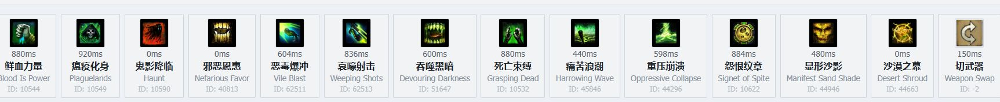
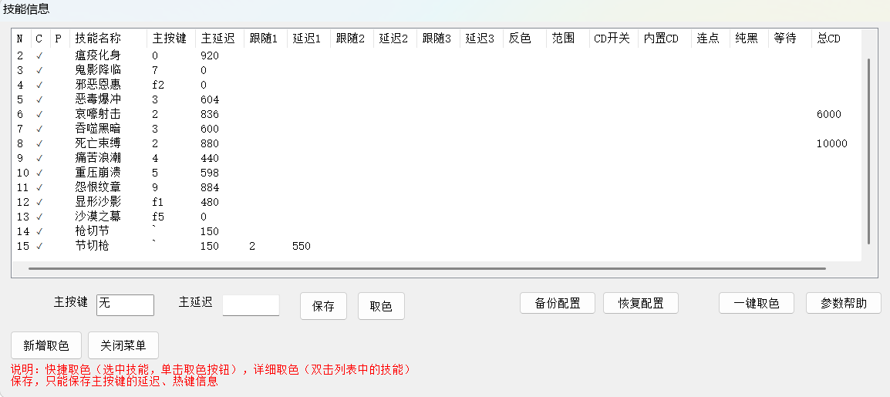
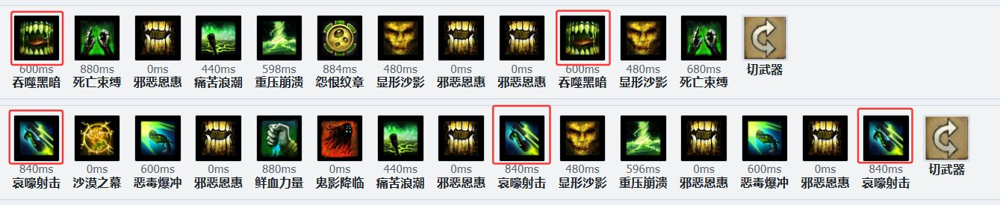
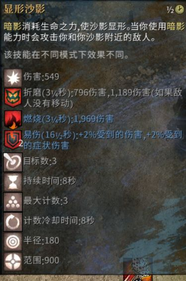
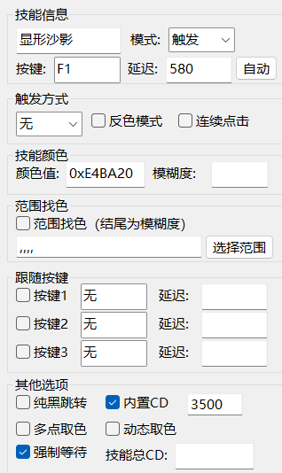
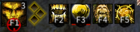
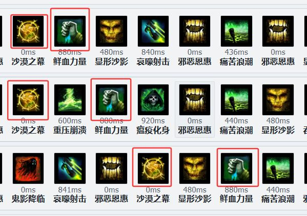
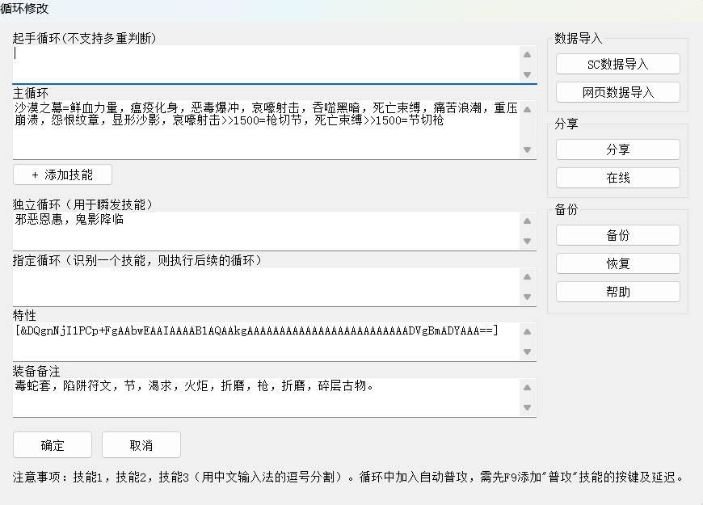
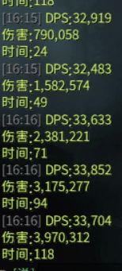

从0教你写灾厄，症状可直接导入，碎层通用
1，打开主页右边sc翻译连接，通过星钾岛，搜索到灾厄循环
2，通过翻译工具获得基础循环

3，将循环信息导入到本地
4，修改循环部分参数，使用新版的切武器方案

鲜血力量，瘟疫化身，鬼影降临，邪恶恩惠，恶毒爆冲，哀嚎射击，吞噬黑暗，死亡束缚，痛苦浪潮，重压崩溃，怨恨纹章，显形沙影，沙漠之幕，哀嚎射击>>1500=枪切节，死亡束缚>>1500=节切枪
5，查看完整循环，进一步优化
这里只需要关注切武器之前，技能的次数。

例如，在切武器之前，节杖2使用了2次，枪2使用了3次。
那么切武器条件为
哀嚎射击>3=枪切节
死亡束缚>2=节切枪
如果切武器采用了跟随按键，按下2，那么这2个次数都-1，因为跟随按键无法作为计数。
或者使用技能剩余cd来作为切武器条件
哀嚎射击>>1500=枪切节
死亡束缚>>1500=节切枪
表示，武器2剩余时间大于1.5秒，切武器，小于1.5秒等待释放。
这里注意，f9cd参数，需要计算敏捷后的cd，例如原cd10秒，敏捷为7500，原cd6秒，敏捷为4500
6，部分技能优化


例如，灾厄F1，症状的持续时间为3秒，那么可在技能基础添加一个内置3到4秒的cd，避免f1好了就用。
另外f1，使用时，如果切武器会打断，所以加一个强制等待。

这里把f2移动到独立循环，同时也把影魔二段移动到独立循环，这2个技能是瞬发。
机场可以把影魔换成不死文章，否则绿条不够。

F5基本跟献血力量是绑定的，所以采用多重判断写循环，由于鲜血力量需要施法，不能放到独立，保持在主循环。
沙漠之幕=鲜血力量
鲜血力量的按键为 F5+鲜血力量的跟随按键。
7，最终循环如下
|沙漠之幕=鲜血力量，瘟疫化身，恶毒爆冲，哀嚎射击，吞噬黑暗，死亡束缚，痛苦浪潮，重压崩溃，怨恨纹章，显形沙影，哀嚎射击>>1500=枪切节，死亡束缚>>1500=节切枪|邪恶恩惠，鬼影降临| 沙漠之幕,触发|鲜血力量,f5,0,8,880|瘟疫化身,0,920|恶毒爆冲,3,604|哀嚎射击,2,836,,,,,,,,,,,,,,,,,触发,0,,0,,,4500|吞噬黑暗,3,600|死亡束缚,2,880,,,,,,,,,,,,,,,,,触发,0,,0,,,7500|痛苦浪潮,4,440|重压崩溃,5,598|怨恨纹章,9,884|显形沙影,f1,580,,,,,,,,,,,,,,,,,触发,1,3500,0,1|枪切节,`,150,2,550|节切枪,`,150,2,550|邪恶恩惠,f2|鬼影降临,7 [&DQgnNjI1PCp+FgAAbwEAAIAAAAB1AQAAkgAAAAAAAAAAAAAAAAAAAAAAAAADVgBmADYAAA==] 毒蛇套，陷阱符文，节，渴求，火炬，折磨，枪，折磨，碎层古物。
可直接导入


0灌注，1蛋糕，很久没玩灾厄，不确定新版输出多少，可自行修改。
评论列表（6）
为什莫总是会自动切武器大佬
@1111 >>这个判断，是根据技能剩余cd进行切武器的，如果你没有敏捷，那么需要填写技能本身的游戏cd，如果有敏捷，是需要x0.75，如果不想这个判断，可以删除>>的判断，改成技能2=1=切武器
这个切武器后第一个按键是不是3啊
@青枫 跟随武器一般选2，因为cd快，选3可能切过去cd还没好
@melis 好的感谢
测试成果，无食物，无扳手，+5灌注，34.4K。很强